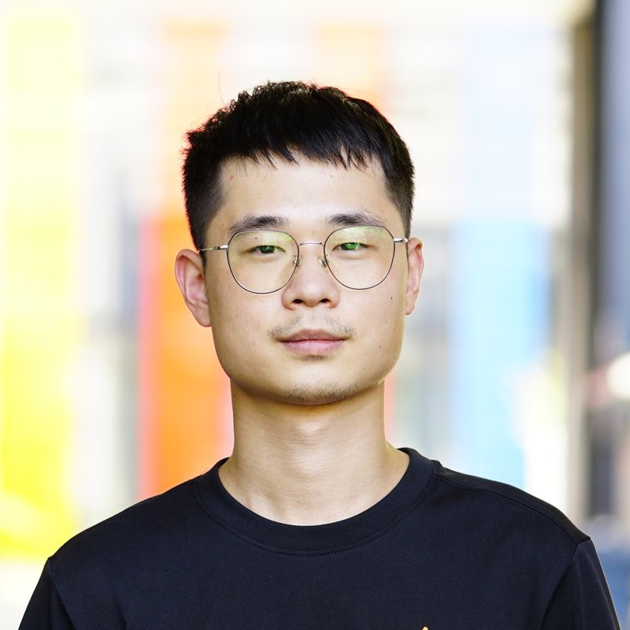
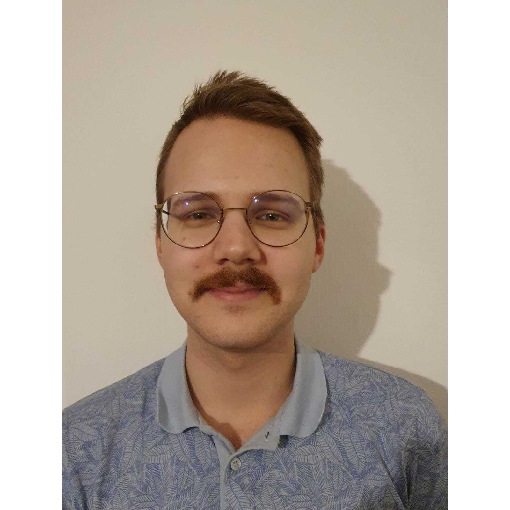

PI
Philippe Schwaller joined EPFL as a tenure-track assistant professor in the Institute of Chemical Sciences and Engineering in February 2022. He leads the Laboratory of Artificial Chemical Intelligence, which works on AI-accelerated discovery and synthesis of molecules. Philippe is also a core PI of the NCCR Catalysis, a Swiss centre for sustainable chemistry research, education, and innovation. He belongs to a new generation of scientists with a broad set of skills – in his case a combination of chemistry, materials science, computer science, and experimental research.
- 5 years at IBM Research – Zurich (with Dr. Teodoro Laino)
- PhD (2021) in Chemistry and Molecular Sciences (with Prof. Jean-Louis Reymond), University of Bern
- MPhil (2019) in Physics, University of Cambridge
- BSc (2014) and MSc (2016) in Materials Science & Engineering, EPFL
Administrative Assistant
Annick Gaudin () – the amazing person who makes sure that all things run smoothly.
PhD Students
- Started in March 2022
- MSc in Computer Science, EPFL
- BSc in Computer Science, University of Belgrade
- Started in April 2022 (based at IBM Research)
- MSc and BSc in Chemistry and Chemical Engineering, ETHZ
- Started in August 2022
- BSc in Chemistry and Chemical Engineering from Universidad de Antioquia, Medellin

- Started in August 2022
- MSc in Chemical Engineering from University of Chinese Academy of Sciences, Beijing
- Started in September 2022
- AstraZeneca Grad Program
- MRes, Imperial College London and BSc, McGill University

- Started in October 2022
- Joint with LDPC
- MSc in Chemistry, Strasbourg University and BSc, La Rioja
- Started in January 2023 (with Janssen Pharmaceuticals)
- BSc and MSc in Physics Engineering, NOVA School of Science and Technology
Project Students
- October 2022 - January 2023
- MSc at Taras Shevchenko National University of Kyiv, Ukraine

- February - June 2023
- Master’s thesis
- MSc and BSc in Molecular & Biological Chemistry, EPFL
- February - June 2023
- Project student
- BSc in Mechanical Engineering, RWTH Aachen
- MSc in Chemical Engineering, RWTH Aachen
- February - June 2023
- Project student
- MSc and BSc in Chemistry, EPFL
- March 2023 - July 2023
- Bachelor’s thesis
- Senior undergraduate at Shanghai Jiao Tong Univeresity
Alumni
Project students
- Théo Neukomm (EPFL, master semester project, Fall 2022)